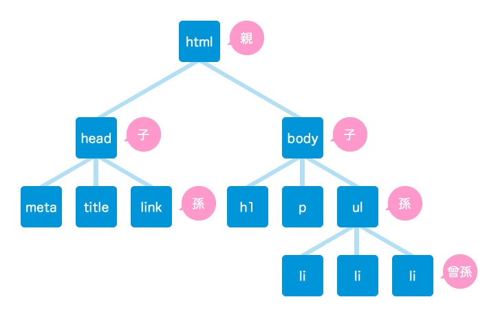
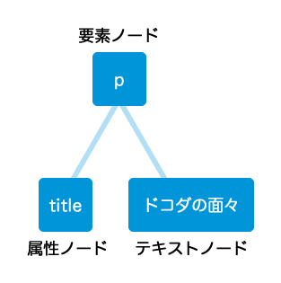

ドットコーダーセッション2「JavaScriptとDOM」
@hogenishi
簡単な流れ
- 自己紹介（00:01）
- JavaScriptの簡単な歴史（00:03）
- JavaScripについて（00:11）
- DOMについて（00:19）
- 質疑応答（00:20）
以上の構成で20分ぐらいお話させていただきます。
自己紹介
- 名前
- 中西 祐介
- 職業
- HTML、CSSコーダー
- 趣味
- ドットコーダー
Twitterはhogenishiというアカウントでアイコンは こんなやつです。
技術的なつぶやきはほとんどしていませんがお邪魔でなければフォローしてくださいね。
JavaScriptの簡単な歴史
JavaScriptの起源
NetscapeがSun Microsystemsと協力して開発したもの。その当時、ブラウザ市場を支配していたNetscape Navigator 2とともに JavaScript1.0が1995年にデビューしました。
Microsoftが遅れを取るまいとIE3のリリースに合わせて、独自言語であるVBScriptと、一種のJavaScriptであるJScriptをリリースする。これに対しNetscapeとSunは、ECMA（European Computer Manufacturers Association）と共にJavaScriptを標準化することに。その結果生まれたのがECMAScript。この名前は定着せずにマーケティング戦略としてSunが開発したJavaのネームバリューを利用。本来はLiveScriptと呼ばれることになっていたがJavaScriptに。JavaとJavaScriptという2つの言語について人々の頭を混乱させる結果に。
NetscapeとMicrosoftのブラウザ戦争
NN4が1997年6月に、同年の10月にIE4がリリース。それぞれに大拡張されたDOM。JavaScriptで多くのことが新たにできるように。ただそれぞれに独自の仕様で開発していたので、差異が生まれ開発者がDOMスクリプティングを利用する際には、コードを分岐させる必要があった。当時はNN4とIE4用に2つのスクリプトを書いていた。
Web標準の登場
W3CがNetscapeとMicrosoftの協力のもと1998年10月にDOMレベル1を完成させる。
ブラウザ戦争の終わり
ブラウザの市場シェアの覇権争いは、Microsoftの勝利に終わりました。CSSやJavaScriptの実装の不一致が多くあるのでで、ブラウザ・メーカーの占有的姿勢に対する反動が始まり、WaSP(Web Standards Project)と称されるグループが結成される。WaSPの最初の仕事はブラウザ・メーカーにW3Cの勧告に準拠するように働きかけることでした。WaSPの働きかけによるものか時流のものかはわからないがWeb標準のサポートは近年向上されています。
新たなる始まり
NNがなくなって、IE、Safari、FF、Operaなどの登場と台頭。現在よく使われているブラウザの95%には、DOMのサポートが組み込まれている。各ブラウザのHTMLレンダリングエンジンや各ブラウザの対応状況を参考に。
JavaScriptについて
JavaScriptとは
JavaScriptはWebブラウザ上で主に動作します。JavaScriptが誕生した当時、いまと違って、Webページはとても静的でした（文字と写真のみで動きがなかった）。閲覧者が文字のサイズを変更したり、クリックでデザインを変えたりするようなアクションやユーザーとの対話性を出すために、JavaScriptは作り出されました。
その他の特徴としてインタプリタ言語ということが挙げられます。インタプリタとはプログラムの実行時に、順次命令を解釈しながら実行させるタイプのプログラムで、コンパイラ言語のようにコンパイルしてそのコンピュータが理解できる言葉に直す手間が省けます。エラーがあったとしても修正してそのまま再度起動するという事も容易に出来ますが、インタプリタはコンパイラ言語に比べて実行時のスピードは遅くなってしまいます。
JavaScriptに必要なもの
- テキストエディタ
- ブラウザ
- 情熱
だけなんです。
最後の要素があればJavaScriptに限らず何でも出来ますけどね。
JavaScriptを実行するには
JavaScriptで書かれたコードは(X)HTMLで書かれたドキュメントの中から実行される必要があります。
これを行う方法は2通りです。
<head>内に直接記述する
<!DOCTYPE html PUBLIC "-//W3C//DTD XHTML 1.0 Transitional//EN" "http://www.w3.org/TR/xhtml1/DTD/xhtml1-transitional.dtd">
<html>
<head>
<script type="text/javascript">
ここにJavaScriptのコードを記述
</script>
<style type="text/css">
<!--
CSSならこのように書きますよね。同じようなイメージです。
-->
</style>
</head>
<body>
ここにマークアップを記述
</body>
</html><script>タグの中でsrc属性を使ってファイルを読み込む
<!DOCTYPE html PUBLIC "-//W3C//DTD XHTML 1.0 Transitional//EN" "http://www.w3.org/TR/xhtml1/DTD/xhtml1-transitional.dtd">
<html>
<head>
<script type="text/Javascript" src="hoge.js"></script>
<link rel="stylesheet" type="text/css" media="all" href="hoge.css">
</head>
<body>
ここにマークアップを記述
</body>
</html>シンタックス
- シンタックス
- プログラミング言語の文法規則、構文規則。もっと噛み砕くと書き方のルール。
以下の英語の文に当てはめて説明すると、英語は文の先頭は大文字で始まり最後はピリオドで終わるという書き方のルールがあります。
We love dotcoder.ではJavaScriptのシンタックスはどのようなものか？
var hoge = 'ほげほげ';Demo
変数や配列、演算、条件文、ループ文などなど説明したいことはたくさんあるのですが時間が限られているので簡単なDemoを…。
// 変数を宣言
var msg = 'Hello, World!';
// 条件文
if(msg) {
alert(msg);
} else {
alert('変数に何も代入されていません。');
};まず変数を宣言します。変数（variable）というのは、数の値や文字列を一時的に保管しおくための入れ物。＝は左辺と右辺が等しいという意味ではなくて右辺を左辺に代入するという意味です。
var msg = 'Hello, World!';if文は以下のような処理をしてくれる条件文です。
if(条件式) {
// 条件が満たされた場合の処理
} else {
// 条件が満たされなかった場合の処理
};DOMについて
DOMとは
DOM（Document Object Model）とは，HTMLやXMLといったマークアップ言語へアクセスするためのAPI（Application Programming Interface）です。
DOMで用いられるもっとも重要な決まりごとは、ドキュメントをツリー図で表現するということ。さらに、ドキュメントは家系図として表現することができる。Demo
<!DOCTYPE html PUBLIC "-//W3C//DTD XHTML 1.0 Transitional//EN" "http://www.w3.org/TR/xhtml1/DTD/xhtml1-transitional.dtd">
<html xmlns="http://www.w3.org/1999/xhtml" xml:lang="ja" lang="ja">
<head>
<meta http-equiv="Content-Type" content="text/html; charset=UTF-8" />
<title>[デモ]JavaScriptとDOM｜factory.yusukenakanishi.com</title>
<link rel="stylesheet" type="text/css" media="all" href="http://factory.yusukenakanishi.com/common/css/demo.css" />
</head>
<body>
<h1>dotcoder</h1>
<p title="メンバー">ドコダの面々</p>
<ul id="hogeList">
<li>noriさん</li>
<li>rewさん</li>
<li>hilokiさん</li>
</ul>
</body>
</html>
ノード
ノード（node）という用語はネットワークの世界から来た言葉で、ネットワーク上の交点を指示するために使われます。DOMにもよく似た状況が存在します。ドキュメントは、ドキュメントツリーの枝や葉というノードが集まったものです。
<p title="メンバー">ドコダの面々</p>
demo
簡単なDemoを…。
<!DOCTYPE html PUBLIC "-//W3C//DTD XHTML 1.0 Transitional//EN" "http://www.w3.org/TR/xhtml1/DTD/xhtml1-transitional.dtd">
<html xmlns="http://www.w3.org/1999/xhtml" xml:lang="ja" lang="ja">
<head>
<meta http-equiv="Content-Type" content="text/html; charset=UTF-8" />
<title>[デモ]JavaScriptとDOM｜factory.yusukenakanishi.com</title>
<link rel="stylesheet" type="text/css" media="all" href="http://factory.yusukenakanishi.com/common/css/demo.css" />
<script type="text/javascript">
//<![CDATA[
window.onload = function() {
var li = document.getElementById('dotcoder').getElementsByTagName('li');
for (var i = 0; i<li.length; i++) alert(li[i].innerHTML);
}
//]]>
</script>
</head>
<body>
<h1>dotcoder</h1>
<p title="メンバー">ドコダの面々</p>
<ul id="dotcode">
<li>noriさん</li>
<li>rewさん</li>
<li>hilokiさん</li>
</ul>
</body>
</html>質疑応答
以上です！
皆様お疲れ様でした。